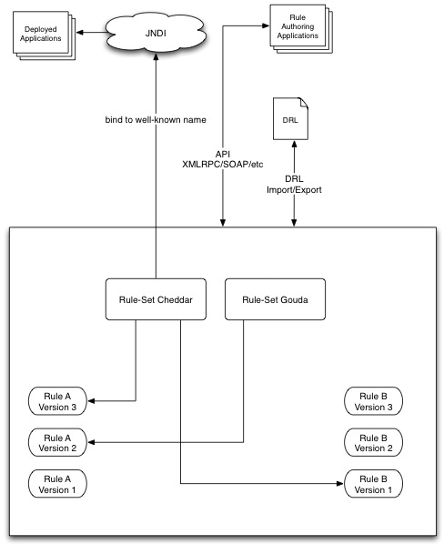
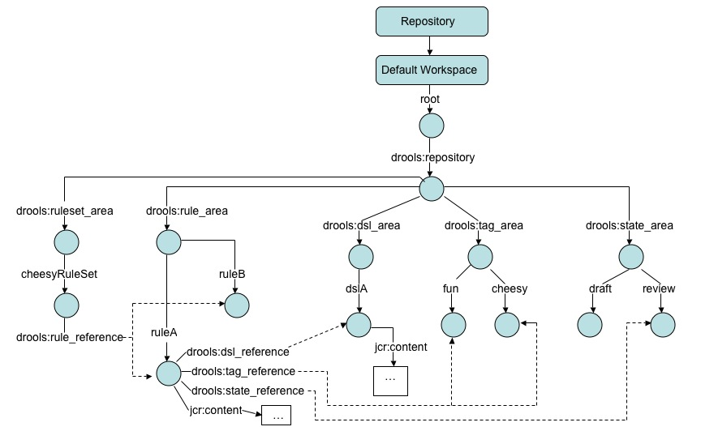

A preliminary design for the JBoss Rules Rule Repository
Ben Truitt (btruitt@rackspace.com), Software Engineer, Rackspace
Managed Hosting
31 July 2006
Abstract
With the growing popularity of JBoss Rules (drools), it is becoming
clear that enterprise users require a well-integrated rule repository
solution to better manage the lifecycle of rules in enterprise
applications. This document outlines a potential design for such
a repository, which is built upon The Content Repository for Java
Technology API (JSR-170). Further input is required to complete
this design, but the ideas outlined here have been successfully
prototyped and tested.
Requirements
The requirements driving this project can be found in subversion here.
They are relisted here for convenience:
Required
1. Version rules
2. Allow for different states: draft, review, approved, deploy, outdated
3. Perform a diff of one version against an older version
4. Produce a bundled package of rules (aka ruleset)
5. Backup rules
6. Provide authentication for accounts
7. Audit the access to the rule repository
8. Restore the repository from backup
These are the critical items. The others are nice features, but they
aren't generally critical. For really large and complex cases, many of
the features in the optional category might be required, but it's hard
to say they are required for the general case.
Optional
1. query rules based on a condition. In other words, find all rules that have the condition "account.type == premium".
2. store the data in a normalized format
3. provide translation to other formats
4. understand how rules go from draft to revision and enforce the process if necessary
5. provide an automatic push mechanism to deploy rules
6. automated rule validation at the rule logic level
7. provides basic templates for categories of rule patterns
8. provide plugin architecture for people to extend
For the purposes of the first phase of this project, I suggest that we focus only on the items above that required in order to minimize initial complexity.
A High-Level Design
Not only were requirements already captured for this project in subversion, but so was a high level design, reproduced here:

The JCR Specification (JSR-170)
The Content Repository for Java Technology specification, developed under the Java Community Process as JSR-170,
provides a standard API for accessing any specification-compliant
repository implementation in a way that is vendor neutral.
Implementations are free to use a backend storage mechanism of
their choice (e.g. database, filesystem, WebDAV repository, etc.).
In addition to a standard interface and vendor neutrality, making use of the JCR API offers these advantages to this project:
- Versioning is an optional component of the spec, supported by Apache JackRabbit and other implementations
- We can make a "state" property in the system for rules, to capture "draft", "review", "approved", "deploy", "outdated"
- There are several ways to produce a bundled package of rules
(ruleset) under JCR, from referencing the set of nodes in the rule set,
to using workspaces to capture the concept of a ruleset, to simply
holding this relationship in a text file stored in the repository
- JCR spec includes export of repository to XML
- Authentication will be handled by JAAS
- JCR spec includes an event framework to hook into for auditing purposes
- JCR spec includes import of repository from XML
- JCR spec includes search capability that may be useful not only
for implementing optional requirement 1 above, but also for other
purposes
The Repository Model - Design Strategy

The above image shows an example of the RulesRepository in use. Let's take a look at the repository from the top down.
Notice that all content resides in one workspace within the repository.
There was some discussion about using multiple workspaces as part
of the design of the repository layout to capture, e.g. rule sets or
rule state (draft, review, etc.) information. This seemed like an
interesting idea because of section 4.11.1.2 of the JCR Specification.
However, a closer examination of the concept of workspaces in a
JCR repository reveals that a workspace is analogous to local checkouts
from a revision control system (those checkouts are not all the same.
one may only contain a subset of the items that are under revision
control, another may contain revisions of items that are tagged to a
certain milestone. and then you may see items in a checkout that are
not even under version control). So while it might be technically
possible to use workspaces to capture individual rule state
information, etc., doing so would not be a clean or clear design.
Therefore, the design above puts all of the RulesRepository into
a single workspace.
Beneath the root node of the workspace is the 'drools:repository' node.
The subtree below this node captures all of the RulesRepository
content. This extra level of heirarchy will help to make it
easier for other systems to make use of the same JCR content
repository, if that is desirable for some reason. Note that the
drools namespace will be used several times - it is a namespace created
within the JCR repository.
The children of the drools:repository node are:
- drools:rule_area
- drools:dsl_area
- drools:tag_area
- drools:state_area
Each of these nodes is of type 'nt:folder' (see section 6.7.22.8 of the JCR specification for more detail).
The 'drools:rule_area' node holds rule nodes. In the example
above, the rule nodes are named 'ruleA' and 'ruleB'. 'ruleA'
provides a view of the properties a node of type
'drools:rule_node_type' has. See below for a more formal
discussion of the node types used by the RulesRepository.
A rule node can have 0 or 1 references to a DSL node (see below).
This reference may be either to the head DSL node, or to a
specific version of the DSL node. If the reference is to the head
DSL node, this reference will continue to follow the head version of
that node in the workspace even as new versions are checked in for the
DSL node.
A rule node can have 0 or many references to a tag node (see below). Tag nodes are not versionable.
A rule node can have 0 or 1 references to a state node (see below). State nodes are not versionable.
A rule node holds the content of a rule in the 'jcr:content' property.
See the more formal definition below, and section 6.7.22.6 of the
JCR specification for more detail on this.
The 'drools:dsl_area' node holds DSL nodes. In the above example,
the node named 'dslA' is a DSL node. A DSL node holds the content
of the DSL in the 'jcr:content' property. See the more formal
definition below, and section 6.7.22.6 of the JCR specification for
more detail on this.
The 'drools:tag_area' node holds tag nodes. In the above example,
the nodes named 'fun' and 'cheesy' are tags. The reason tags are
their own nodes in this repository, rather than being simple String
properties of the rule nodes, is two-fold:
- making tags their own nodes makes searching on the available tags much easier
- making tags their own nodes allows a user interface to provide a drop-down list of possible tags
The same logic applies to state nodes, which reside in under the
'drools:state_area" node of the repository. In the above example
the nodes named 'draft' and 'review' are state nodes.
Neither state nodes nor tag nodes are versionable under this design.
The primary reason for this decision is to simplify the design as
much as possible.
Formal Description of RulesRepository Node Types
drools:dsl_node_type
NodeTypeName
drools:dsl_node_type
Supertypes
nt:file,
mix:versionable
IsMixin
false
HasOrderableChildNodes
false
PrimaryItemName
null
PropertyDefinition
none
This node type serves to make a distinct node
type for DSL nodes, to help ensure a form of type safety when
manipulating nodes. It makes use of the definition of nt:file,
allowing the content of the DSL file to be stored in the jcr:content
property it inherits from that node type. The node also has the
mixin type mix:versionable as a supertype, making this a versionable
node type.
drools:rule_node_type
NodeTypeName
drools:rule_node_type
Supertypes
nt:file,
mix:versionable
IsMixin
false
HasOrderableChildNodes
false
PrimaryItemName
null
PropertyDefinition
Name drools:dsl_reference
RequiredType REFERENCE
ValueConstraints ['drools:dsl_node_type','nt:version']
DefaultValues null
AutoCreated false
Mandatory false
OnParentVersion COPY
Protected false
Multiple false
PropertyDefinition
Name drools:tag_reference
RequiredType REFERENCE
ValueConstraints ['drools:tag_node_type']
DefaultValues null
AutoCreated false
Mandatory false
OnParentVersion COPY
Protected false
Multiple true
PropertyDefinition
Name drools:state_reference
RequiredType REFERENCE
ValueConstraints ['drools:state_node_type']
DefaultValues null
AutoCreated false
Mandatory false
OnParentVersion COPY
Protected false
Multiple false
This
node type serves to
make a distinct node type for rule nodes, to help ensure a form of type
safety when manipulating nodes. It also defines several
properties outlined in the repository layout overview above. It
makes use of the definition of
nt:file, allowing the content of the rule to be stored in the
jcr:content property it inherits from that node type. The node
also
has the mixin type mix:versionable as a supertype, making this a
versionable node type. A node of this type can refer to 0 or 1 DSL
nodes, 0 or more tag nodes, and 0 or 1 state nodes.
drools:ruleset_node_type
NodeTypeName
drools:ruleset_node_type
Supertypes
nt:hierarchyNode
IsMixin
false
HasOrderableChildNodes
false
PrimaryItemName
null
PropertyDefinition
Name drools:dsl_reference
RequiredType REFERENCE
ValueConstraints ['drools:rule_node_type','nt:version']
DefaultValues null
AutoCreated false
Mandatory false
OnParentVersion COPY
Protected false
Multiple true
This
node type serves to
make a distinct node type for ruleset nodes, to help ensure a form of
type
safety when manipulating nodes. It also defines the
property
'dsl_reference' outlined in the repository layout overview above.
It has as a supertype 'nt:hierarchyNode', which allows it to be
stored in a folder node, which the "drools:ruleset_area" node is. A
node of this type can refer to 0 or more rule nodes.
drools:state_node_type
NodeTypeName
drools:state_node_type
Supertypes
nt:hierarchyNode,
mix:referenceable
IsMixin
false
HasOrderableChildNodes
false
PrimaryItemName
null
PropertyDefinition
none
This
node type serves to
make a distinct node type for state nodes, to help ensure a form of
type
safety when manipulating nodes. It
has as a supertype 'nt:hierarchyNode', which allows it to be stored in
a folder node, which the "drools:state_area" node is. This node is referenceable so that a rule node can refer to it.
drools:tag_node_type
NodeTypeName
drools:tag_node_type
Supertypes
nt:hierarchyNode,
mix:referenceable
IsMixin
false
HasOrderableChildNodes
false
PrimaryItemName
null
PropertyDefinition
none
This
node type serves to
make a distinct node type for tag nodes, to help ensure a form of
type
safety when manipulating nodes. It
has as a supertype 'nt:hierarchyNode', which allows it to be stored in
a folder node, which the "drools:tag_area" node is. This node is referenceable so that a rule node can refer to it.
RulesRepository Functionality
The functionality rules repository is still not fully defined. A
prototype implementation has been started, and the javadoc for that
implementation's functionality implemented so far can be viewed here.
Web Service Interface
The rules repository will offer a web service interface that will be
utilized by rule authoring tools. This interface still needs to
be defined. It will likely partially overlap with the
functionality documented in the javadoc
of the prototype implementation, but additional services will likely be
required. This section of the design needs additional work.
Open Questions in this Design / Items left to cover
The following design decisions are still unresolved for this design:
- Should the rule_area have a heirarchy of nodes beneath it corresponding to the package that the rule is in?
- More specifics are needed for the user authenication scheme.
- Support for searching needs to be discussed in this design.
- Support for importing and exporting needs to be more thoroughly discussed in this design.
- Support for observation needs to be added to this design to meet the event auditing requirement.
- Support for exporting rules to DRL / DSL files needs to be included in this design.
- The web service interface needs to be defined.